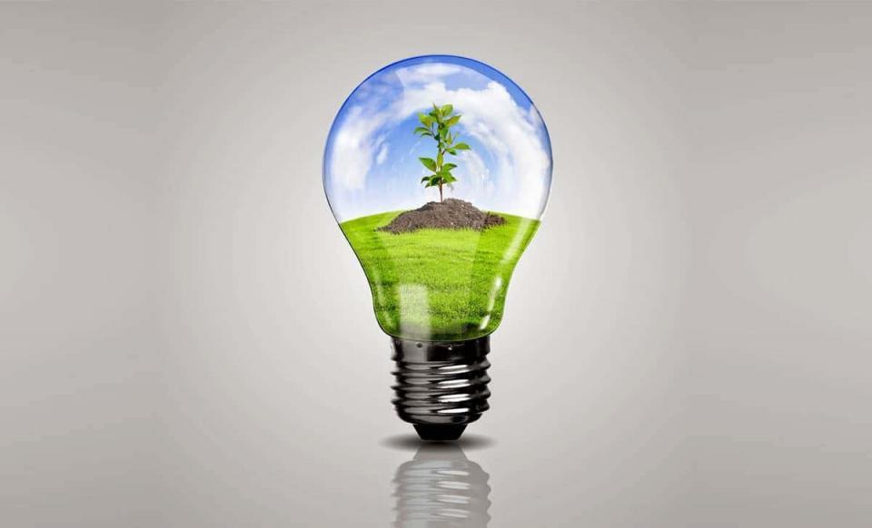
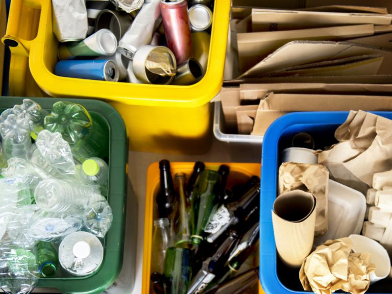

Rozumie się przez to metodę odzysku, w ramach której odpady są przetwarzane na produkty, materiały lub substancje, a następnie ponownie wykorzystywane w pierwotnym lub innym celu. Recykling nie obejmuje odzysku energii oraz ponownego przetwarzania na materiały, które mają być końcowo wykorzystane jako paliwo.
Bezpłatne pozbycie się niepotrzebnych odpadów z gospodarstw domowych. Obniżenie zużycia surowców naturalnych. Redukcja ilości odpadów na wysypiskach. Przetworzenie surowców i materiałów na nowe lub ponowne ich wykorzystanie.


Przy segregacji bezwzględnie trzeba pamiętać o odpadach niebezpiecznych, do których zaliczają się zużyte baterie i akumulatory, przeterminowane lekarstwa, zużyte świetlówki, odpady po żrących chemikaliach (np. środkach ochrony roślin), a także zużyty sprzęt RTV i AGD (tzw. elektroodpady). Tych odpadów nie wolno wyrzucać do śmieci zmieszanych. Można je oddać w specjalnie wyznaczonych punktach w sklepach i aptekach, a także w punkcie selektywnej zbiórki odpadów komunalnych, czyli tzw. PSZOK-u (Punkt Selektywnego Zbierania Odpadów Komunalnych), zorganizowanym przez gminę. Godziny otwarcia PSZOK-u możesz sprawdzić m.in. na stronie internetowej swojej gminy.
Dodatkowo na osiedlach domków jednorodzinnych dostarczane są do każdej posesji małe kontenery lub worki w kolorze brązowym, które przeznaczone są na odpady biodegradowalne tj. resztki żywności, trawa, chwasty oraz inne odpady z ogrodów.
Często zdarza się również że nie ma osobnych pojemników na metale, które w takim wypadku należy wyrzucać łącznie z plastikami. Dodatkowo z reguły pojawia się jeden pojemnik na szkło.
Szczegółowy wykaz rzeczy, które możemy poddać procesowi recyklingu i wrzucać do odpowiedniego kontenera, znajdziemy na plakatach, które można pobrać z internetu lub uzyskać w zakładzie oczyszczania miasta.